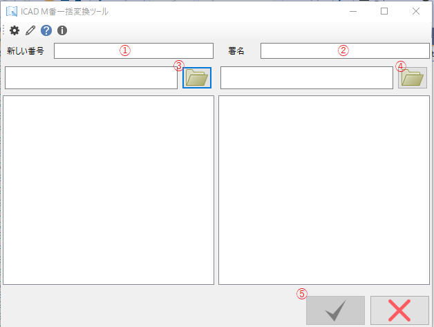
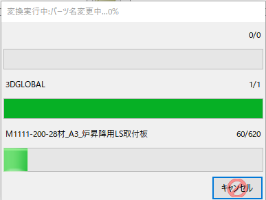
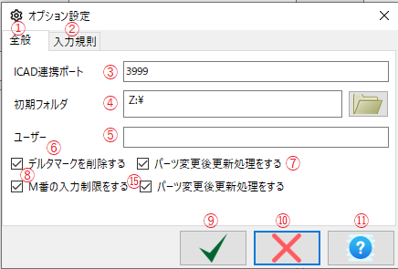
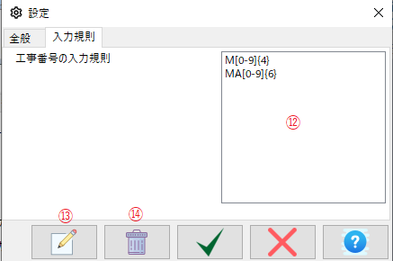
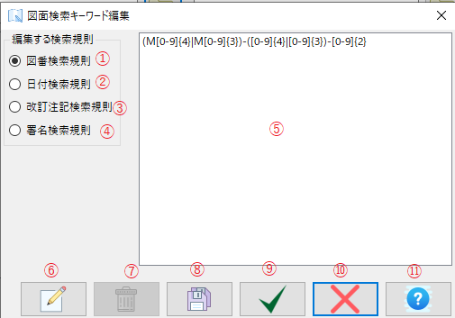
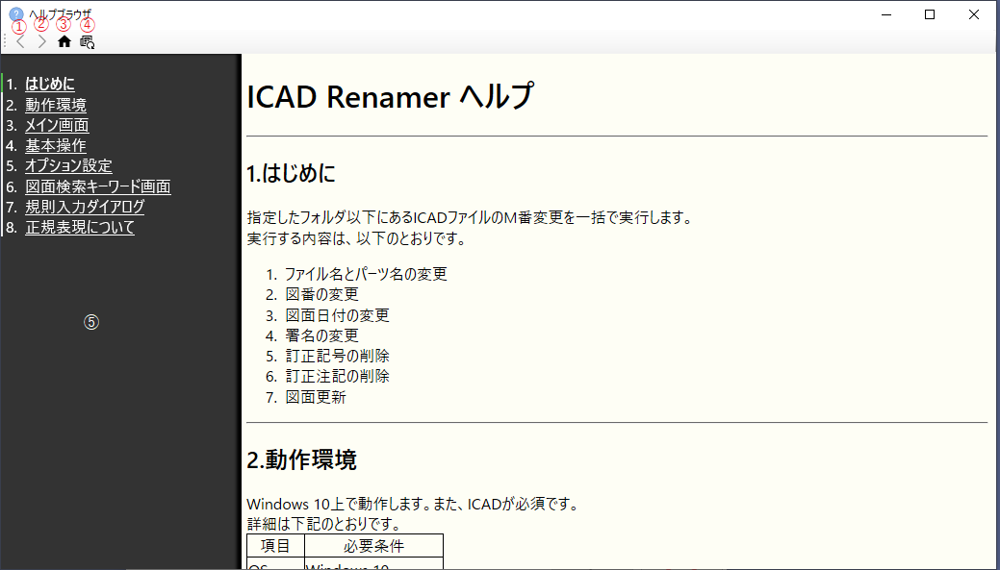
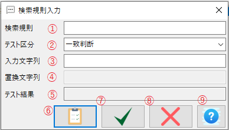
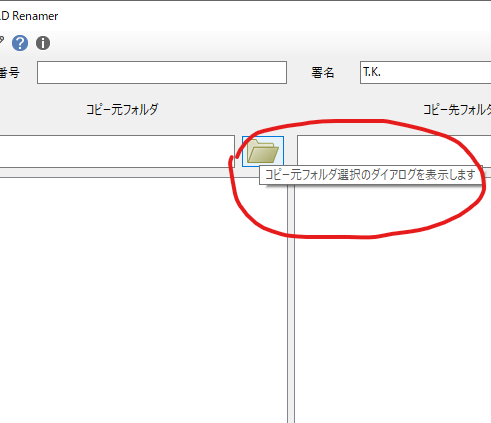
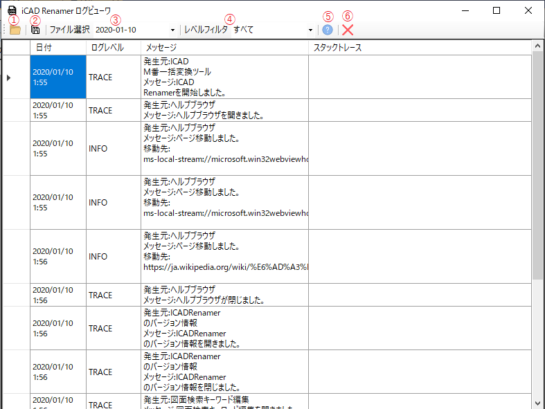

指定したフォルダ以下にあるICADファイルのM番変更を一括で実行します。
実行する内容は、以下のとおりです。
| 項目 | 必要条件 |
| OS | Windows 10 |
| メモリ | 50MB以上 |
| ライブラリ | .NET FrameWork 4.8 |
| ほか | ICAD SX ICAD SDK+実行権 |
メイン画面は以下のとおりです。
①～④の項目を入力すると、実行できます。
いずれかに不備があると、実行ボタンは押せません。
各番号の内容は下記のとおりです。
①...新しいM番を入力します。入力制限をかけることができます。
②...署名に使う文字を入力します。
③...コピー元のフォルダを指定します。
④...コピー先のフォルダを指定します。
⑤...コピー元のフォルダをダイアログで指定します。こっちを使う方が確実です。
⑥...コピー先のフォルダをダイアログで指定します。こっちを使う方が確実です。
⑦...コピー元のファイルが表示されます。
⑧...コピー先のファイルが表示されます。
⑨...実行ボタンです。変換を実行します。
⑩...変換しないで終了します。
⑪...設定画面を表示します。
⑫...図面の変換要素を検索する規則の編集画面を表示します。
⑬...ヘルプを表示します。
⑭...情報ボックスを表示します。
新しいM番は既定では、M○○○○もしくは、MA○○○○○○（いずれも〇は数字)を受け付けます。
それ以外の文字は受け付けず、他のボックスに移動できません。
このボックスを飛ばして別のボックスに移動するには、入力した文字を全部削除してください。
署名に使用する文字を入力します。
平たく言えばあなたの署名です。
図面変更の署名欄の変更に使用します。
コピー元のフォルダを入力します。
フォルダをコピー&ペーストするときに使用してください。
通常は、隣のボタンからダイアログを表示した方が直観的で実用的です。
コピー元フォルダが存在しない場合は、エラーとなって他のボックスへ移動できません。
このボックスを飛ばして別のボックスに移動するには、入力した文字を全部削除してください。
コピー先のフォルダを入力します。
フォルダをコピー&ペーストするときに使用してください。
通常は、隣のボタンからダイアログを表示した方が直観的で実用的です。
コピー元フォルダが存在しない場合は、エラーとなって他のボックスへ移動できません。
このボックスを飛ばして別のボックスに移動するには、入力した文字を全部削除してください。
ボタンを押すと、ダイアログボックスが表示されます。
フォルダを選択して、OKボタンを押してください。
コピー元ボックスにフォルダのパスが表示されます。
フォルダがあっても、ICADファイルが存在しないフォルダを選択したときは、エラーになってもう一度ダイアログが開きます。
ボタンを押すと、ダイアログボックスが表示されます。
フォルダを選択して、OKボタンを押してください。
コピー先ボックスにフォルダのパスが表示されます。
コピー元フォルダを指定したら、ここにコピー元フォルダ以下のICADファイル名が表示されます。
ファイルは、指定フォルダのサブフォルダ以下のファイルも表示されます。
フォルダパスは表示されません。
コピー元フォルダを指定したら、ここにコピー元フォルダ以下のICADファイル名が表示されます。
ファイルは、指定フォルダのサブフォルダ以下のファイルも表示されます。
フォルダパスは表示されません。
新しく作ったフォルダの場合は、何も表示されません。
実行可能な状態であるとき、押すことができます。
押すと実行進捗のウィンドウが現れ、変換が始まります。
実行可能な状態は、以下のとおりです。
終了します。
エラーメッセージが出てこのボタンを押せないときは、ボックスの内容を全部消して押してみてください。
下記の①～④の項目を入力してOKボタンを押します。

実行するとICADが立ち上がります。
実行中は、進行状況が表示されます。

図面数や規模によって時間がかかる場合があります。
キャンセルボタンを押したとき、反応が遅い場合があります。これは実行中のファイルが完了するのを待つためです。
以下の内容をコピー元フォルダ以下のすべてのICADファイルに対して実行します。
パーツ名のM番部分を変更します。
図番検索規則を使って図番部分を置き換えます。
子パーツも変更対象で、外部パーツと外部パーツの参照関係も更新します。
図番が入っていないパーツは実行されません。
図番検索規則を使って図番を置き換えます。
前方一致で検索します。
日付検索規則を使用して、日付を置き換えます。
日付は完全一致で検索します。
署名検索規則リストにある文字を使って、署名を置き換えます。
完全一致で検索します。
デルタ記号を検索して削除します。
また、訂正注記規則と署名規則を使用して、訂正注記を検索し、削除します。
この項目はOFFにできます。方法は、オプション設定を参照してください。
図面更新を実行します。
寸法修正は実行しません。
この項目はOFFにできます。方法は、オプション設定を参照してください。
実行結果は、コピー先フォルダにcsvファイルで保存されます。
ファイル名は、「[コピー元M番]→[コピー先M番]変換結果-ICADRenamer.csv」です。
途中、失敗してもそのまま実行を続けるので、実行結果は必ず確認してください。
パーツ名変更は、既定ではMで始まり、4桁の数字または3桁の数字が続くパーツ名を見つけて、その見つけたパーツ名の部分を、新しいM番に置き換えます。
したがって、市販部品や図面を見つけているわけではありませんので、おなじルールで始まるパーツは変換してしまいます。これは仕様です。
２D図面の変更は、2D図面内の要素の種類を検索しています。
検索規則でテキスト要素を検索して一致しているものを探し、内容の一部置き換えを行います。
したがって、そもそもない要素を作成することはできません。
図面更新は、ICADに対してマクロコマンドを発行しています。
大規模な図面では「応答なし」状態になることがあります。(ICAD上と同じ)
図面更新によって発生する可能性がある「寸法のずれ」は修正しません。
実行中、とくに図面表題欄の編集中にICADが自動的に再起動することがあります。
これは、図面開閉を繰り返したときに使用メモリが増大するICADの問題に対応するためです。
実行中は、ICADを操作しないでください。
操作中の図面を閉じたり、変更を加えたりすると、エラーが発生することがあります。
ICADRenamerのオプションを設定します。
タブが2つあって、画面が変わります。


全般タブです。
6個の設定ができます。
M番入力規則を変更・追加・削除するタブです。
ICADとの通信を行うポート番号を指定します。
通常は既定値(3999)のまま使用します。
既定値ではうまくいかない場合は、変更します。
この番号を変更したら、ICAD側の番号も変更する必要があります。
ICAD側の番号変更はICADのマニュアルを参照してください。
コピー元フォルダの既定値です。
コピー元とコピー先のフォルダ検索ダイアログを開いたときの既定のフォルダになります。
あなたの名前です。
ここに入力された名前は、メイン画面の署名欄の既定値になります。
図面変更時に、デルタマークを削除するか指定します。
チェックが入っていると削除します。
訂正履歴分があるときは一緒に削除されます。
図面変更後、更新処理をするか指定します。
チェックが入っていると更新を実行します。
更新処理は、時間がかかることがありますので、場合に応じて使用してください。
M番入力規則を追加・編集・削除します。
M番入力規則は複数登録でき、入力するときにリストのいずれかの形式に合致していれば通ります。
入力規則文字をダブルクリックすると、編集に、後述の新規作成ボタンを押したときは新規作成になります。
追加・編集はテスト可能な規則入力画面で行います。
M番入力規則は、正規表現という特殊な形式で行います。
必ずテストしてから入力してください。
この設定を保存して終了します。
この設定を保存しないで終了します。
ヘルプ画面を表示します。
新しいM番入力規則を追加します。
このボタンをクリックすると、テスト可能な規則入力画面が現れます。
選択したM番入力規則を削除します。
確認ダイアログが現れるので、OKを押すと実際に削除されます。
ICADが起動したとき、最小化で起動するか指定します。
チェックをはずすと、通常のウィンドウサイズで起動します。
図面の図番や日付、署名、訂正履歴の文字を検索して置き換えますが、置き換え元のキーワードを登録する画面です。

画面の内容は以下のとおりです。
①～④のボタンは一つだけ選択でき、選択した内容は、⑤の画面に表示されます。
⑤のボックス内の項目をダブルクリックすると、規則入力ダイアログが現れて、編集できます。
また、新規作成や、削除も可能です。
編集する検索規則を選択します。
①～④のうち、ひとつを選択すると、右の⑤の内容が変化します。
図面の図番テキスト要素を検索する規則です。
検索は前方一致で判定します。
図面の日付テキスト要素を検索する規則です。
検索は完全一致で判定します。
図面の改訂注記テキスト要素を検索する規則です。
このあとに、④の署名リストの名前を追加して検索します。
検索は後方一致で判定します。
図面の署名テキスト要素を検索する規則です。
検索は完全一致で判定します。
選択した規則の一覧が表示されます。
項目をダブルクリックすると規則入力ダイアログが立ち上がり、編集できます。
また、右クリックメニューでも編集・追加・削除ができます。
新しい規則を追加できます。
押すと、規則入力ダイアログが立ち上がります。
項目を選択して、押すと選択した項目を削除します。
確認メッセージが出るので、OKすると削除されます。
変更した内容を保存します。
変更した内容を保存して終了します。
変更した内容を保存せず終了します。
ヘルプ画面を表示します。
ヘルプ表示用の簡易ブラウザです。

下記は各ボタンの説明です。
ひとつ前の項目へ戻ります。
戻れないときは灰色です。
ひとつ次の項目進みます。
進めないときは灰色です。
この画面が呼び出された項目へ移動します。
たとえば、オプション設定画面から呼び出されたら、オプション画面の項目がホームになります。
メイン画面から呼び出されたら、メイン画面がホームです。
画面の表示が止まった時など、押すと改善される可能性があります。
正規表現の規則の入力画面です。

テスト内容を選択します。
変更する規則の内容によって選択肢が変わります。
選択肢は以下のとおりです。
検索規則と一致するかを判断します。
この項目のときは、置換文字列は入力しません。
検索規則と入力文字列を入力して、テストボタンを押すと、テスト結果が表示されます。
結果は「一致」または「不一致」と表示されます。
入力文字列で入力した文字列に検索規則が一致する箇所に置換文字列に置き換えます。
上の3項目を入力して、テストボタンを押すと、テスト結果が表示されます。
置換した文字列は、テスト結果に表示されます。
入力文字列で入力した文字列から、検索規則で一致した項目を抽出します。
上の2項目を入力して、テストボタンを押すと、テスト結果が表示されます。
抽出した文字列は、テスト結果に表示されます。
テストする元になる文字列です。
テスト区分が置き換えのときに使用します。
入力文字列を検索規則で検索して、一致した項目をこの文字で置き換えます。
テストボタンを押すと、結果が表示されます。
一致判断では「一致」または「不一致」が、
置き換えでは、入力文字列を置換文字列で置き換えた文字列が、
一致抽出では、入力文字列から、一致した文字列を表示します。
テストを開始します。
結果は、テスト結果に表示されます。
結果が良好なら、このボタンを押して、入力を完了します。
入力をキャンセルして終了します。
正規表現に関するヘルプ画面を表示します。
専用のブラウザフォームで表示します。
画面上でボタンや文字にマウスカーソルを合わせると、簡単な説明（ツールチップ）が表示されます。

コマンドラインを設定できます。
| コマンド | 別名 | 引数 | 内容 |
|---|---|---|---|
| -Console | -c | なし | コンソール付モードで立上ます。 |
| -Debug | -d | なし | デバッグモードで立上ます。 |
| -Silent | -s | [コピー元フォルダ],[コピー先フォルダ],[新しいM番],[署名] | コマンドラインから変換を実行します。 |
| -Help | -? | なし | コンソールにヘルプを表示します。 |
正規表現は、テキストの解析や検索に使われるパターンマッチングの手法です。
一般的な解釈は、Wikipediaを参照してください。
また、ICADRenamerが実際に解析するのは、Microsoftのものを参照してください。
以下に、正規表現の一部の説明を載せます。
| 文字 | 説明 | 例 |
|---|---|---|
| { } | 直前の文字の繰り返し回数を表します。 | [0-9]{3}は「000から999」までとなります。 また、a{4}だと、「aaaa」になります。 |
| [0-9] | 1桁の数字を表します。 | M[0-9]{3}は「M000からM999」までとなります。 |
| | | または、を表します。論理演算のORと同義です。 | M|MA は、「MまたはMA」となります。 |
| (...) | 条件のくくりを表します。 | (The|a) pen は、「The pen」または「a pen」となります。 |
| {n,} | 直前の文字がn回以上出現することを表します。 | a{2,}はaが2回以上連続しています。 aa,aaa,aaaa・・・など。 |
| 使用場所 | 文字 | 説明 |
|---|---|---|
| M番入力規則 | M[0-9]{4} | 「M」のあとに4桁の数字が続きます。 M0000～M9999 |
| M番入力規則 | MA[0-9]{6} | 「MA」のあとに6桁の数字が続きます。 MA000000～MA999999まで。 |
| 図番検索要素 | (M[0-9]{4}|M[0-9]{3})-([0-9]{4}|[0-9]{3})-[0-9]{2} | たとえば、以下のものです。 M123-456-78 M123-4567-89 M1234-567-89 M0123-4567-89 この項目は前方一致です。 |
| 日付検索要素 | ([0-9]{4}|[0-9]{2})(/|.)([0-9]{2}|[0-9])(/|.)([0-9]{2}|[0-9]) | たとえば、以下のものです。 2020.1.2 2020.12.23 2020.1.23 2020.12.3 20.1.2 20.12.3 20.12.23 上の「.」は「/」でも可。 |
| 改訂注記検索要素 | ．{3,} | 「.」（ドット）が3個以上 |
| 改訂注記検索要素 | ・{3,} | 「・」（中点）が3個以上 |
ICAD Renamerの専用ログビューワです。
ICAD Renamerと同じフォルダに入っている単独のアプリケーションです。
ログを表形式で表示します。
既定では、インストールフォルダのLogフォルダの内容を表示しています。
③のファイル選択の矢印をクリックすると日付が選択でき、その日付の内容が表示されます。
また、表示するログのレベルは、④で抽出することができます。

下記は各ボタンの説明です。
既定のフォルダではなく、他のフォルダを選択します。
ログファイルのないフォルダを選択するとエラーになり、フォルダ選択に戻ります。
今選択しているファイルを、名前を付けて保存します。
ダイアログが表示されますので、選択して保存します。
ログは1日を単位とするテキストファイルになっています。
ドロップダウンして、日付を選択すると、表示される内容が変わります。
表示されているログをログレベルでフィルタします。
行のないレベルは表示されません。
ヘルプブラウザでヘルプを表示します。
ログビューワを終了します。
以下のライブライを使用しています。
| 名称 | 作者 | ライセンス |
|---|---|---|
| NLog | Copyright (c) 2004-2019 Jaroslaw Kowalski <jaak@jkowalski.net>, Kim Christensen, Julian Verdurmen | BSD 3-Clause "New" or "Revised" License |
| CSVHelper | Copyright © 2009-2018 Josh Close and Contributors | Dual licensing under MS-PL and Apache 2.0 |
| Newtonsoft.Json | Copyright © James Newton-King 2008 | MIT License |
| Ookii.Commandline | Copyright © Sven Groot(Ookii.org) | Microsoft Public License |
| Microsoft.Toolkit.Forms.UI.Controls.WebView | Copyright (c) .NET Foundation and Contributors | MIT License (MIT) |
| Microsoft.Toolkit.Forms.UI.Controls | Copyright (c) .NET Foundation and Contributors | MIT License (MIT) |
| tocbot | Copyright (c) 2016 Tim Scanlin | The MIT License (MIT) |
| sxnet | © 2009 iCAD LIMITED. All rights reserved. | プロプライエタリ |